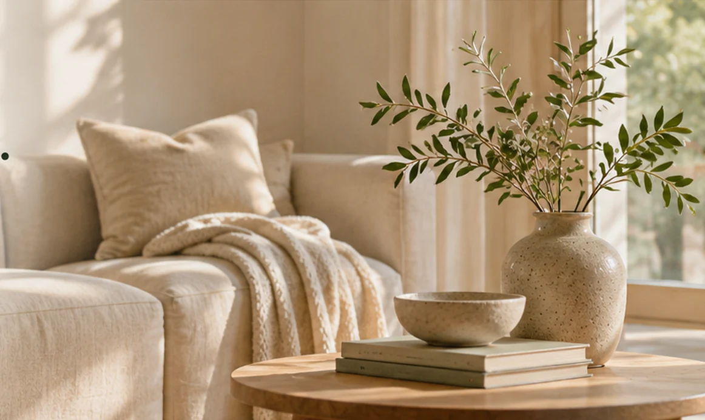

HOME STYLING · HOME STAGING · INTERIOR DESIGN
Make rooms feel like home.
Tuuli Design creates warm, timeless and functional interiors inspired by Nordic living and the calm of nature.
@TUULI.DESIGN
A little more Nordic inspiration
Little moments from real interiors, photographed with care. Find more inspiration on Instagram.
@tuuli.design


Original photographs provided for this website · curated gallery, not a live Instagram feed
A home that feels like you.
Simple details, timeless choices and practical ideas for everyday living.
Browse the portfolio →